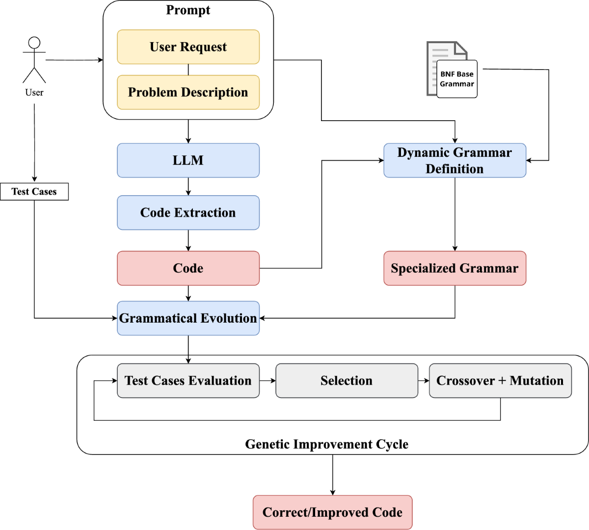
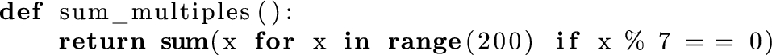
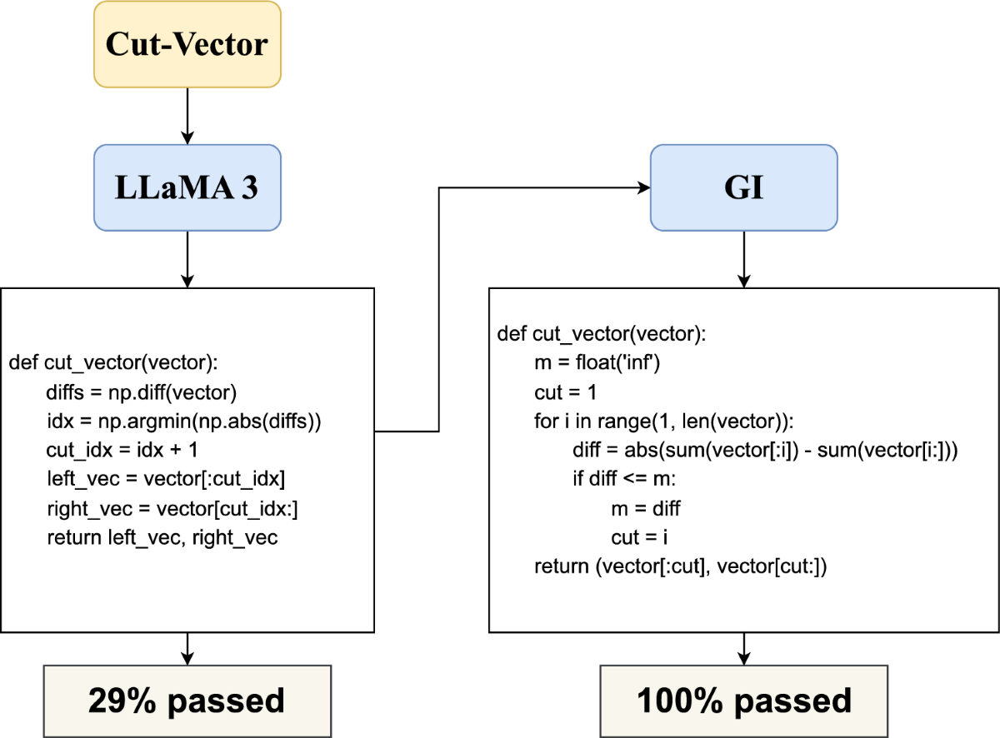
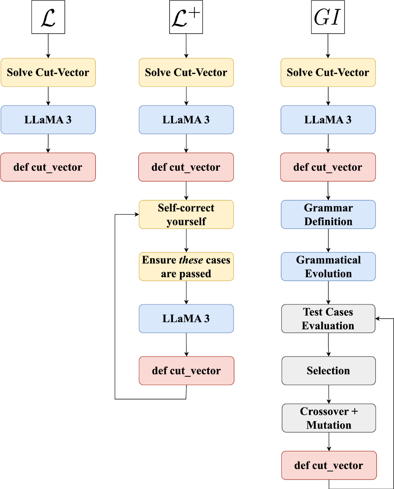

Exploring the Effect of Genetic Improvement for Large Language Models-Generated Code
Abstract
In recent years, the field of Natural Language Processing (NLP) has made considerable progress with the development of neural network-based models, leading to the creation of various Large Language Models (LLMs). These models have demonstrated strong performance in various NLP tasks, such as language translation, sentiment analysis, and named entity recognition. One notable application of LLMs is their ability to generate code automatically from simple problem descriptions. However, even advanced LLMs frequently generate incorrect code. To address this issue, we extend a recently proposed method that aims to improve the correctness of code generated by LLMs using an evolutionary approach known as Genetic Improvement (GI). Our method involves constructing a dynamic grammar based on the LLM-generated code and using a problem-agnostic fitness function. In our experiments, we evaluated the proposed method on 25 well-known and widely-used problems across four different LLMs, both open-source and proprietary models. We demonstrate that our approach significantly improves the accuracy of code generated by LLMs. Specifically, for problems that the LLM alone does not fully solve, we show that GI significantly improves the initial LLM-generated solution in 50% to 75% of cases across the tested models. Our proposed GI approach remains effective as long as the initial LLM-generated code, despite some errors, provides a solid foundation for constructing a correct program.
Introduction
Developing software is a complex process that requires specific skills, knowledge, and expertise. As a result, creating tools designed to assist programmers has long been a priority in software engineering. Recently, Large Language Models (LLMs) have been successfully employed for automatic code generation in tools such as Copilot [1, 2] and ChatGPT.
LLMs in their current form can generate implementations of functions and methods from a description. However, if the problem is not well specified or is inherently complex, LLMs can provide flawed or incomplete code. While incorrect, such code might contain the general structure of the correct solution, serving as a solid foundation for subsequent steps.
Hence, we present an evolutionary method called Genetic Improvement (GI), which, given a textual description of a problem and a collection of user-provided test cases as input–output pairs, aims to enhance the code generated by an LLM. The proposed method is widely applicable since it does not strongly depend on any specific LLM, only requiring a set of input–output pairs for each problem. While we focus on Python as the main language, the approach can be applied to any programming language by defining its grammar and specialization process.
A natural question is whether LLMs alone are sufficient to generate correct solutions. In some cases, they are. However, when LLMs fail to produce the correct solution, self-correction through re-prompting is often ineffective, especially for ambiguous or complex tasks. Additionally, LLMs typically cannot leverage existing test cases that might already be available in large codebases (e.g., for testing purposes). Traditional methods for improving LLM-generated code, such as re-prompting or fine-tuning, can be computationally expensive and may not guarantee good generalization, particularly when high-quality training data is limited. In contrast, our method iteratively refines LLM-generated code by utilizing information from existing test cases to guide the evolutionary process. While our approach is not a complete solution, it advances the integration of LLMs and evolutionary computation for more effective code generation and correction.
Going into more detail, the proposed method consists of the following steps:
Asking the LLM to produce the code to solve a problem given a textual description of it;
Extracting the code and specializing a grammar in Backus-Naur Form (BNF) to the problem being solved;
Using Grammatical Evolution (GE) to perform GI of the produced code, making use of the provided test cases to guide the evolutionary process.
This approach was also followed in [3], which this work extends. Compared to the original version, this work provides improvements in the following ways:
1. instead of the traditional tournament selection, lexicase selection [4, 5] is used, combined with a down-sampling strategy that evaluates individuals on only a small fraction of the test cases. Lexicase selection enables the selection of solutions that perform well across diverse test case samples, ensuring greater diversity. Meanwhile, the down-sampling strategy enhances efficiency in the selection process and helps capture the generalization capabilities of high-quality solutions;
2. a new fitness function, more general and granular than simply counting the number of passed test cases, has been defined. It accounts for partial correctness, enabling the evolutionary process to make finer-grained improvements to LLM-generated solutions;
3. due to the rapid evolution of LLMs, we tested more recent and powerful models, for a total of 4 LLMs, ensuring that our findings remain relevant in the evolving AI landscape.
The introduced modifications were compared with the original method on 25 different coding problems from PSB2 [6, 7], showing that the newly proposed method improves upon the original one.
We empirically demonstrate that our proposed method significantly improves the correctness of LLM-generated code. In some cases, we find that using lexicase selection with a granular fitness function, which considers errors in individual test cases, produces even better results. For problems where the LLM alone fails to generate a correct solution, our approach enhances the initial LLM-generated code in 50% to 75% of cases across the four models we tested.
Compared to alternative approaches, GI offers a flexible and scalable correction mechanism without requiring changes to the underlying LLM. Re-prompting may generate different solutions, but they can still be incorrect. Fine-tuning, on the other hand, needs large datasets and significant computational resources, making it less suitable for real-time code correction. Rule-based approaches often fail to generalize across diverse problems. In contrast, GI uses evolutionary principles to iteratively refine solutions, allowing corrections to evolve based on user-provided examples.
In Sect. 2, we review the literature on the intersection of LLMs and evolutionary algorithms. Section 3 describes our proposed method, while Sect. 4 presents the results of our experimental analysis. We discuss key findings in Sect. 5 and conclude in Sect. 6.
Related Works
In this section, we conduct a literature review of key studies that involve the combination of LLMs and evolutionary algorithms in various ways and for diverse objectives, with a particular focus on code generation.
Large Language Models
The advent of neural network-based architectures, particularly the Transformer model [8], revolutionized the field of Natural Language Processing (NLP). By utilizing attention mechanisms exclusively, this model has enabled significant advancements in text generation and comprehension. Since the introduction of this type of architecture, numerous studies and tools, including BERT [9], have been developed and published to address a wide range of NLP tasks [10]. These models were trained on large text corpora to improve their capability to infer missing text from given input sequences.
In 2023, Meta AI introduced the first generation of LLaMA [11], a series of pre-trained LLMs made open-source for research and development purposes, with sizes ranging from 7 to 65 billion parameters. A notable variant, Alpaca [12], was developed by Stanford University as a fine-tuned version of LLaMA using the self-instruct method for instruction tuning [13]. Alpaca, particularly in its 7B and 13B parameter versions, was trained on instruction-following demonstrations, enabling it to perform similarly to other chatbots. In 2023, LLaMA 2 [14], an enhanced version with up to 70 billion parameters, was introduced. The following year, a code-specialized version of LLaMA 2, called CodeLLaMA [15], was released. Also in 2024, the latest version of the LLaMA family of models, LLaMA 3 [16], was launched.
OpenAI has significantly advanced LLMs with its development of GPT-3 [17] and its successors, GPT-3.5 and GPT-4 [18]. These models, built on decoder-only Transformer architectures, differ in their number of parameters and the scale of their training data. GPT-4, accessible via ChatGPT Plus and OpenAI APIs, continues to exhibit impressive performance across various text-based tasks. In 2024, CriticGPT [19], a GPT-4-based model designed to detect errors in ChatGPT-generated code.
As LLMs capabilities have improved dramatically, several analyses and discussions were conducted to check how LLMs can potentially be adopted in personalization [20].
Code Generation
The field of code generation garnered significant attention from the scientific community starting in the latter half of the twentieth century, particularly through the exploration of program synthesis [21,22,23,24] and program transformation [25].
Given that the problem of code generation (or program synthesis) is hard [26], various tools for automatic code generation have been introduced for diverse purposes. These include producing C code from mathematical models [27], creating code using Generative Adversarial Networks (GANs) [28], implementing design patterns [29], generating efficient code from Event-B formal specifications [30], generating VHDL code from Unified Modeling Language (UML) specifications [31] or high-level hardware descriptions [32], and producing code for web applications based on the Model-View-Controller (MVC) pattern [33].
Automatic code generation has also garnered significant interest in the field of Evolutionary Computation (EC). In particular, Genetic Programming (GP) [34] stands out as a well-known evolutionary algorithm originally designed to evolve programs. Following this, Grammatical Evolution (GE) [35, 36] was developed, gaining popularity for its capability to represent and evolve programs that adhere to a specified grammar.
GE was utilized for generating VHDL code to represent digital circuits [37]. In [38], an evolutionary algorithm was applied to create code for Programmable Logic Controllers (PLCs) to control various processes. The study in [39] employed an optimized hybrid evolutionary algorithm to predict code execution time and accelerate automatic code optimization for Ansor [40], an auto-scheduling system that extends Apache TVM [41]. Additionally, [42] employed a hybrid Genetic Algorithm (GA) to automate the generation of parallel code for regular control problems. Cartesian GP (CGP) [43] was used in [44] to evolve machine code for a simplified implementation of the MOVE processor. Furthermore, multi-objective linear GP was employed in [45] to create assembly driver routines for devices in micro-controller-based systems.
In addition to evolutionary methods, LLMs are also powerful tools for code generation and have recently received significant attention. In particular, LLaMA and ChatGPT have significantly advanced automatic code generation. While ChatGPT has shown considerable skill in this area, it also has certain limitations [46]. Research on the effectiveness of LLMs includes an evaluation of Copilot for coding assistance [1], an empirical analysis of code generated by ChatGPT [47], and a study on how the non-deterministic nature of ChatGPT-like tools affects scientific validity [48].
One key challenge in automatic code generation is evaluating the generated code. This is typically achieved by defining benchmarks that enable comparisons among different methods. Before the release of ChatGPT and LLaMA, LLMs were evaluated using two benchmark datasets to highlight their limitations, as described in [49]. The PSB2 benchmark suite [6, 7], which includes 25 updated general program synthesis problems, has been used to assess code generation techniques. For instance, the PSB2 suite was used to compare the effectiveness of Copilot with evolutionary methods such as GP [2, 50]. Additionally, it was recently employed to evaluate other program synthesis techniques [51,52,53,54]. The HUMANEVAL set [55] was created to measure functional correctness in code synthesis from doc-strings, and it has been used to test LLMs such as Codex. In particular, HUMANEVAL was adopted in [56] to compare LLMs and GE. EvalPlus [57] builds on HUMANEVAL by adding more test cases to rigorously evaluate the functional correctness of code synthesized by LLMs. EvoCodeBench [58] is a benchmark that aligns with real-world repositories in multiple dimensions and avoids data leakage. RepoMasterEval [59] is a benchmark for evaluating code completion techniques constructed from real-world TypeScript and Python repositories. In [60], the authors implemented a synthetic data generation algorithm called LintSeq that refactors existing code into a sequence of code edits and they fine-tuned small LLMs with these synthetic edit sequences. They proved that these fine-tuned models produce more diverse programs than baseline LLMs.
Despite the impressive capabilities demonstrated by numerous code generation tools, including those based on LLMs, their effectiveness in generating error-free code varies depending on problem complexity and the quality of prompts provided. Genetic Improvement (GI) [61, 62], a method derived from GP, focuses on optimizing existing code through evolutionary techniques [63, 64]. GI has been used to enhance auto-generated code in languages such as C++ [65, 66], C, Java [67], and Python [68]. Tools like [69, 70] emphasize bug removal and time efficiency optimization. GI was employed in Facebook during the deployment of the automated bug-fixing tool SapFix [71] and to reduce network usage [72]. Moreover, its impact is analyzed in [73] to determine the actual propagation effect of mutations in deeply nested code. Recent research has investigated the integration of GI methods with LLMs to evolve and improve code snippets generated by LLMs [53]. For instance, [74] utilized recent LLMs to develop new hybrid swarm intelligence optimization algorithms.
The combination of LLMs with evolutionary algorithms is explored in several recent works [75], especially for code evolution and refinement [3, 76,77,78,79,80]. Other notable adoptions of LLMs in evolutionary computation are the design of multi-objective evolutionary optimization operators [81], the automatic generation of optimization algorithms [82, 83], and numerical optimization [84]. Additionally, LLMs are also explored to build, in combination with GP, an Explainable AI (XAI) dashboard [85], tune hyper-parameters in evolutionary algorithms [86], and generate test cases of increasing complexity for curriculum learning with the final purpose of training a GP agent [87]. In [88], the authors developed a grammar-based evolutionary approach to explore the prompt space of LLMs, given the high impact the prompt quality has on LLMs outcomes.
In addition to working on the generated code, evolutionary algorithms can also be used to modify LLM prompts. EvoPrompting [89] was developed to combine evolutionary prompt engineering with soft prompt-tuning for optimizing neural architectures. EvoPrompt [90] was introduced as a framework for discrete prompt optimization, utilizing LLMs to evolve prompts. Similarly, Promptbreeder [91] was proposed as a general-purpose, self-referential self-improvement technique that evolves and adapts prompts for specific domains.
A study closely related to ours is the one from Tao et al. [92], which also combines LLMs with program synthesis. However, several important distinctions highlight the unique contributions of our approach:
(i) Tao et al. evaluate their method using the PSB1 benchmark suite [93], whereas we apply our method to a broader and more recent collection of synthesis problems.
(ii) Their study utilizes five LLMs, including open-source models with significantly more parameters than those considered in our work.
(iii) In their setup, LLMs are used only to generate the initial program population for GI; the LLM-generated solutions often outperform the final evolved programs, as acknowledged by the authors.
More critically, the focus of Tao et al. is on enforcing a predefined secure BNF grammar to ensure syntactic correctness and avoid malicious code generation. In contrast, our work focuses on enhancing the semantic correctness of LLM-generated programs by incorporating test case feedback into the evolutionary process. We show that our method leads to a higher rate of correct solutions–measured by passed test cases–compared to the LLM baseline.
Furthermore, our method operates under minimal supervision, leveraging user-supplied test cases and dynamic grammar specialization to guide the search. This stands in contrast to approaches based on fine-tuning, reinforcement learning, or prompt engineering, which typically require extensive resources, domain-specific data, or repeated model interaction. Our results demonstrate that test-driven, grammar-constrained GI can substantially improve correctness without modifying or retraining the LLM.
Proposed Approach
In this section, we present our proposed approach and discuss how it can be used to improve the LLM output via GI.
The problem we aim to solve is as follows: given a coding problem defined by a textual description and a collection of test cases—represented as input–output pairs—we want to develop a program that implements the problem description and produces the expected output for each input as specified in the corresponding test case. In our method, the textual description serves as the input to the LLM, while the test cases are utilized to define the fitness function. As previously detailed, our method is divided into three macro-steps, with the latter two comprising the GI part:
1. Extraction of the LLM output. The LLM is prompted with a problem description, and the generated response is processed to remove formatting inconsistencies and irrelevant text so that the actual code can be extracted. The code is then converted into an Abstract Syntax Tree (AST) for further genetic transformations;
2. Dynamic grammar definition and solution encoding. The grammar is dynamically specialized based on the problem description and the LLM-generated code. This specialization refines the base grammar to make the evolutionary search focus on promising areas of the search space. The LLM-generated solutions are then parsed into a genome for genetic manipulation;
3. Evolution. The initial solutions are replicated to form the population, and GI is applied using a fitness function that evaluates correctness and error degree. This function enables the evolutionary process to better discriminate solutions with the same number of passed test cases.
The methodology is cost-effective as it primarily depends on running an evolutionary algorithm, which requires only CPU resources and has an adjustable computational budget based on hardware capacity. For LLM prompting, the cost depends on whether the LLM is proprietary or open-source. For proprietary models, prompting may also incur monetary costs beyond computational time. However, our methodology remains viable with a limited number of prompts, making it affordable even when using expensive LLMs. Furthermore, our approach is independent of both the coding language and the LLM.
In Fig. 1, we show a general overview of the workflow of our proposed method.

查看已保存高清图（单独打开，可放大）Extraction of the LLM Output
Even with a precise prompt, LLM output may include extraneous text. Therefore, the initial phase involves extracting the code from the LLM response. This extraction depends on the specific LLM and coding language (different LLMs might delimit the code differently).
In our context, a code extraction procedure applied to an LLM response should be designed to extract both the code that is part of the solution but remains unchanged by GI (e.g., import statements, supporting functions, or classes) and the code that is refined by GI (e.g., the main function or class).
It is important to note that the extracted code might not be syntactically correct and cannot be immediately encoded into an AST for use in GI. Hence, to ensure that solutions with syntax errors are not immediately discarded, we employ the following heuristic to extract a syntactically correct program:
(i) retrieve the index of the first line with a syntax error,
(ii) remove the corresponding line, and
(iii) repeat steps i and ii until no syntax errors remain or no code remains.
Comments are removed, and only the existing import statements are retained. Since variable names and function parameter names do not affect code correctness, they are renamed as with i ranging from 0 to the number of variables minus one. Thus, the result is a syntactically valid code, which may be empty. To encode the extracted code as an AST for use in GI, we replace indents and newlines with specific tags, as required by the ponyge2 library [68]. Furthermore, since the grammar for a language such as Python can be quite complex, we parse only a subset of it, covering most common use cases while maintaining a compact grammar.
Dynamic Grammar Definition and Solution Encoding
Here, we justify the use of small “base” grammars to aid the evolutionary process, and we describe how they can be dynamically augmented to fit the task at hand.
Base Grammar
Let represent a grammar that includes the primary constructs of the programming language used to solve the problem. It is important to note that may differ from the standard formal grammar for the language, incorporating specific biases and modifications necessary for the evolutionary process. First, is designed to favor the generation of small, manageable programs. This is typically achieved by favoring derivations that expand into terminal symbols rather than non-terminals, thus biasing random selection towards shorter programs without altering the recognized or generated language. Moreover, the grammar can be tailored to produce code containing commonly used libraries and functions, eliminating the need to generate their names from scratch.
Dynamic Grammar Definition
To help the evolutionary process, we take advantage of the information contained in the textual description of the problem and the solution provided by the LLM, refining the grammar to incorporate problem-specific constants and symbols.
The core concept is to introduce additional terminal symbols to the “base” grammar . We identified two primary types of symbols that can aid the search process: constants and function names. Constants mentioned in the problem description (e.g., a task described as “finding all multiples of 37 less than 1000” involves two constants) can be difficult to identify via evolution. However, incorporating these constants directly from the problem description simplifies their usage in the solution since we ensure they are readily available for evolution. Similarly, including functions and libraries eliminates the need to recreate existing code. However, identifying useful libraries requires understanding the language ecosystem, not just its grammar.
Since an LLM is trained on a large corpus of text that includes code, the LLM can effectively identify useful libraries. Given the LLM output and the problem description, a general procedure for extracting the necessary information is as follows:
(i) extraction of imported libraries, function names, strings, and numbers from the LLM output to ensure that useful libraries and functions can be selected during evolution;
(ii) (ii) extraction of strings and numbers from the problem description as constants;
(iii) extraction of keywords from the problem description as terminal symbols (strings) via KeyBERT [94].
A problem-specific grammar can be obtained by adding the extracted symbols to , along with all variable names in the code as terminal symbols. Furthermore, the likelihood of generating the extracted symbols can be increased–thus making their inclusion in a solution more probable–by replicating their derivations multiple times.
A benefit of this method is that the evolutionary process can directly use existing library functions and does not need to generate constants from scratch when they can be easily derived from the problem description. This ensures that evolution starts with a more relevant search space. However, a significant drawback is that the effectiveness of the grammar heavily relies on the quality of the provided description and the output generated by the LLM. Output that is incorrect but not in a fundamental way (e.g., the general structure is correct and it includes calls to useful library functions) can still aid in guiding the search. Conversely, a completely incorrect output that is far from a viable solution can hinder the evolutionary process by making the use of irrelevant constants and functions more likely.
After defining the grammar , the solutions provided by the LLM can be encoded into an AST to be used in the evolutionary process.
Evolution
Since GI is used to refine existing solutions, two components need to be defined: how the initial population is generated and how the individuals are evaluated. Other hyper-parameters of the evolutionary processes, like the choice of genetic operators, are not specific to the proposed approach and will not be the focus of this discussion.
The initial population is seeded with solutions produced by the LLM, encoded as previously detailed, possibly with repetitions if the number of solutions is smaller than the population size. Note that replication is useful to limit the computational resources used by LLMs which, for the larger models, could be significant.
Regarding the fitness function, it is defined based on the test cases provided by the user (i.e., valid input–output pairs). The fitness values consist of two components: the first () considers the number of test cases passed, while the second () computes the discrepancy between the expected and generated outputs. These two components are combined using a lexicographic ordering (), which prioritizes the component. More formally, given a set of n test cases for the problem Q and a program M, the first component is defined as:
where represents the output of M on input and is the indicator function, which is 1 if the enclosed proposition is true and 0 otherwise.
The second component is defined as:
where is a measure of dissimilarity that depends upon the type of the provided values. Therefore, the solutions are ordered according to the number of passed test cases and, in case of a tie, according to how close they are to the correct output.
Experimental Phase
For the experimental phase, we specify some of the details that were left more general in the previous description (e.g., the way the LLMs are prompted and the grammar used, among other factors). In particular, the LLMs we test are CodeLLaMA 7B (CL7), LLaMA 3 8B (L3), ChatGPT (CG), and GPT4 (G4).
Language
Although the proposed method has been outlined in a general manner, our experiments specifically concentrated on the Python language. This choice was primarily driven by the abundance of training materials available for popular languages, enhancing the LLMs capabilities to produce meaningful solutions, as well as the availability of libraries for code parsing and analysis.
In the experiments, each problem description was preceded by the following text when prompting an LLM:
Write a single Python function to solve the following problem and insert the necessary modules:
Consequently, we assume that the LLM provides the solution within a single function that can be executed by calling it with one or more arguments as inputs and returns one or more outputs.
Since an LLM can provide more functions in its answer, we assume that the last function is the main one, while the previous functions are supporting functions that are presumably invoked within the main function. This assumption comes from the fact that, in many programming languages, it is common to find the main function after the supporting functions.
Here we focus on evolving only the body and the parameters of the main function, while we keep all the import statements and supporting functions fixed to avoid expanding the search space.
The extraction of the code from the LLM answers begins with removing all comments and extracting all valid imports and functions. Of these, the last one is kept as the main one, as detailed above, and the others are kept if they are syntactically valid. The main function body is made syntactically correct using the heuristic detailed in Sect. 3.1. If the resulting body is empty, it is replaced with pass.
Our study intentionally adopted minimal prompting to simulate low-effort LLM usage, reflecting realistic user constraints where prompt engineering expertise or time is limited.
Grammar
The grammar we used is a subset of the full Python grammar, outlined briefly here. Initially, the grammar generates a call to the main function. This function takes several parameters as input and includes some code in its body. The body can contain one or more statements, categorized as conditional (if, for, while) and non-conditional statements.
Non-conditional statements can be a return, an assignment, a print, a pass, a continue, a break, a raise, or an instance method called on an object. A node represents a value that can be one of a (possibly formatted) string, a number, a Boolean, a problem parameter, null, a logical or mathematical combination of two variables, a list, a tuple, a list comprehension, a tuple comprehension, or a function called on variables. The complete base grammar in BNF for the Python subset we use is available in our repository (see Sect. 4.5).
Note that, although we could theoretically parse all problems by defining a grammar covering the entire Python language, doing so would result in a much larger search space, potentially slowing down the evolutionary process. Instead, the grammar we employ aims to strike a reasonable balance between expressiveness and search space complexity. A key motivation for adopting a dynamic grammar-based approach over a static one is its adaptability to problem-specific characteristics, significantly improving search efficiency.
A static grammar defines a fixed search space that lacks domain-specific information, making exploration more difficult. Preliminary experiments with a large static grammar revealed that the evolutionary process struggled to improve fitness due to a search space too vast relative to the fitness landscape’s complexity. In contrast, our dynamic grammar optimizes the search space by incorporating problem-relevant constants, function names, and libraries extracted from the problem description and LLM-generated solutions. This targeted augmentation enhances the discovery of meaningful program structures while reducing the likelihood of generating irrelevant code.
As an example, consider the problem “Write a function that returns the sum of all multiples of 7 below 200”. From the problem description, the relevant constants are 7 and 200. If an LLM provides a solution like:

查看已保存高清图（单独打开，可放大）the extracted functions include sum and range, which are commonly used in Python. The problem-specific grammar extends by introducing the constants 7 and 200 as terminal symbols and the function names sum and range. Instead of randomly mutating numbers, the evolutionary process can now directly use 7 and 200. This way, the search favors selecting range(200) instead of iterating over an excessive range. Moreover, the use of sum is encouraged, reducing the likelihood of selecting incorrect functions.
Fitness
The dissimilarity measure adopted in quantifies the difference between the expected and obtained outputs based on the data type. The choice of distance metrics balances computational efficiency and the ability to distinguish between different degrees of correctness.
The specific distance measures for different data types are:
Numeric values (integers, floats, Booleans): Compared using the absolute difference, i.e., . This measure provides a fine-grained evaluation of numerical discrepancies;
Strings, lists, and ranges: Compared using the edit distance (Levenshtein distance), which counts the minimum number of single-element insertions, deletions, or substitutions needed to transform one sequence into another. This ensures that small structural modifications lead to proportionally small penalties;
Sets and dictionaries: Compared using the Jaccard distance, defined as: (3) This is suitable for unordered collections, as it considers the proportion of shared elements;
Tuples: Since tuples often represent multiple return values, their dissimilarity is computed as the sum of the dissimilarities of their elements, ensuring that each component is compared using its respective distance measure.
Additionally, the code may return a value of a different type than expected. In that case, the dissimilarity is assumed to be the maximum possible dissimilarity for the test cases, assuming as output a “neutral” element (i.e., 0 for numbers, the empty string or list, and the empty set or dictionary). If the function raises an exception during its evaluation, that value is doubled.
Note that tuples are not directly compared by using the edit distance, unlike other collection-like data structures. This choice comes from the fact that, if the problem requires a function that returns multiple outputs, the outputs are likely to be packed into a tuple (default behavior in Python). Thus, directly calculating the edit distance on the tuple would be too coarse as a dissimilarity measure.
The selected distance measures ensure that:
(i) minor deviations in output structure or values result in small penalties, preventing premature discarding of promising candidates;
(ii) the dissimilarity function remains computationally efficient;
(iii) each data type is compared in a way that aligns with its intended role in programming tasks.
This approach provides that the fitness function provides a meaningful gradient for evolutionary search while appropriately penalizing incorrect solutions.
Problems
To evaluate our approach, we select the widely used problem dataset PSB2 [6, 7]. This dataset provides a comprehensive set of problems, making it a suitable benchmark for validating automatic code generation algorithms. We begin by assessing the complexity of the coding problems in PSB2 (Table 1). For each problem, we prompt the LLM to generate a solution, repeating this step independently 10 times by using the same prompt. If the LLM successfully solves the problem (i.e., the generated code is correct according to the training examples provided) in at least one of these repetitions, we exclude it from further improvements. Problems solved by the LLM are marked with a in the following tables.
| Name | Alias | Name | Alias |
|---|---|---|---|
| Basement | BS | Bouncing Balls | BB |
| Bowling | BW | Camel Case | CC |
| Coin Sums | CS | Cut Vector | CV |
| Dice Game | DG | Find Pair | FP |
| Fizz Buzz | FB | Fuel Cost | FC |
| Greatest Common Divisor | GD | Indices of Substring | IS |
| Leaders | LD | Luhn | LH |
| Mastermind | MM | Middle Character | MC |
| Paired Digits | PD | Shopping List | SL |
| Snow Day | SD | Solve Boolean | SB |
| Spin Words | SW | Square Digits | SQ |
| Substitution Cipher | SC | TW | |
| Vector Distance | VD |
The problem description is essential when prompting an LLM: Since multiple descriptions may be available,Footnote 1 we employ the official descriptions available in the PSB2 paper itself [6, 7].
Experimental Settings and Results
We prompt the LLM to solve each problem 10 times, producing a total of 10 individuals. These individuals are uniformly replicated to meet the required population size of 200. The evolution is executed for 100 generations. The fitness is calculated by using 1000 test cases as training data and 1000 test cases as test data.
To evaluate and select individuals during evolution, we employ a down-sampled selection strategy, where a subset of test cases is sampled without replacement from the training set at each generation [95,96,97]. Specifically, although the dataset contains 1000 input–output pairs, only 50 training cases are randomly selected at the start of each generation and used for fitness evaluation. This approach ensures diverse assessments across generations, preventing overfitting to a fixed subset of test cases while maintaining time efficiency. Moreover, this process is integrated into the evolutionary selection algorithm, so individuals are evaluated on varying subsets over time, enhancing generalization. Preliminary experiments showed that this modification does not significantly impact the quality of the results but provides a large speed-up in the evolutionary process.
For each combination of problem and LLM, we perform 10 separate GI runs starting with the same initial population. The test case datasets are obtained via the psb2 library [6, 7]. We set an initial maximum depth of 15 and a maximum depth of 30 for the individuals themselves.Footnote 2 We do not impose a wrap-around limit on the genomes, and we set a maximum codon size of 200.
As part of the experimental phase, we tested two selection procedures: tournament selection with a tournament size of 5 () and lexicase selection () [4, 98,99,100]. Both crossover and mutation are sub-tree operators. Crossover is applied with a probability of 0.80. Mutation is applied with a probability of 0.60. An individual applied to a set of input test cases (training or test) is associated with a time-out of 3 seconds to avoid inefficient solutions and, in the worst case, non-terminating ones.
To compare the effectiveness of GI with the self-correction capabilities of LLMs, we implement a procedure based on the method described in [53]. For each LLM, we initially request a solution for a given problem and then evaluate the correctness of the generated code (denoted by ). If the code is incorrect, we prompt the LLM to self-correct its output (denoted by ).
During a self-correction session, the LLM is asked to iteratively improve the output code up to 10 times:
If, in a given iteration, the time-out is reached, then the LLM is prompted with: Your code is too slow. Please, rewrite it and make it correct and more efficient. Remember to insert the necessary modules.
If, in a given iteration, the code contains at least one syntax error, then the LLM is prompted with: Your code contains syntax errors. Please, rewrite it and fix all the syntax errors. Remember to insert the necessary modules.
Otherwise, if the code is logically incorrect, we provide 10 pairs of input–output examples from the training data that were not successfully resolved in the previous iteration. The LLM is then prompted with: Your code is incorrect. Please, rewrite it. Remember to insert the necessary modules. Make sure that followed by examples formatted as input -> output.
We conduct 2 self-correction runs. For each run, we store the best solution across the iterations, based on the number of passed test cases on the training set. This approach allows us to select the best result obtained through LLM self-correction to compare the results with GI.
We execute our GI runs on a virtual machine running Ubuntu 20.04, with 16 dedicated cores on an Intel(R) Xeon(R) Gold 6140 CPU and 128 GB of RAM. We measure that, on average, a single repetition of an evolutionary process consisting of 100 generations, with a population size of 200, takes less than 30 minutes, including the fitness evaluations on both the training and test sets. Our Python implementation is publicly available at https://github.com/dravalico/LLMGIpy.
Statistical significance is assessed by using a Wilcoxon-Mann–Whitney test [101] with . When the number of comparisons exceeds two, a preliminary Kruskal-Wallis test [102] with is performed. If a statistical difference is found among the methods in the group, a Holm-Bonferroni correction [103] with is then applied.
Here, we present and compare two types of GI:
(i) in combination with tournament selection (), as in [3]; (ii) in combination with lexicase selection ().
An ablation study investigating the effect of lexicase selection with as the fitness function, and the effect of with tournament selection, is presented in Appendix A.
We present the results of our experiments in Tables 2 and 3. The tables show the median fraction of passed test cases on the test data by the best overall solutions (according to the training data) for , and GI across the executed repetitions. For each LLM, the table highlights both the problems that are directly solved (as described in Sect. 4.4) and those that are not parsed by the grammar (). When a given method does not pass any test case in all runs, we denote it as 0. Similarly, when a given method passes all the test cases in all runs, we denote it as 1.
| CL7 | L3 | CG | G4 | |||||||||
|---|---|---|---|---|---|---|---|---|---|---|---|---|
| GI | GI | GI | GI | |||||||||
| BS | – | – | – | – | – | – | – | – | ||||
| BB | 0 | 0 | 0 | 0 | 0 | 0 | 0.00 | 0.02 | 0.04 | 0.00 | 0.04 | 0.04 |
| BW | 0.00 | 0 | 0.01 | 0.00 | 0.00 | 0.09 | 0.00 | 0.01 | 0.01 | 0.03 | 0.42 | 0.11 |
| CS | 0 | 0 | 0 | 0 | 0 | 0 | 0 | 0 | 0.00 | 0 | 0.15 | 0.10 |
| CC | 0 | 0 | 0.29 | – | – | – | – | – | – | |||
| CV | 0 | 0.06 | 0.00 | 0.17 | 0.30 | 1 | 0.92 | 0.49 | 0.99 | 0.85 | 0.85 | 0.99 |
| DG | 0.00 | 0 | 0.00 | 0.00 | 0.14 | 0.14 | 0.07 | 0.07 | 0.14 | 0.14 | 0.00 | 0.14 |
| FP | – | – | 0 | 0.76 | 0 | – | – | – | – | |||
| FB | – | – | – | – | – | – | – | – | ||||
| FC | – | – | – | – | – | – | – | – | ||||
| GD | – | – | – | – | – | – | – | – | ||||
| IS | 0.78 | 0.78 | 0.78 | – | – | – | – | – | – | |||
| LD | 0.22 | 0.22 | 0.34 | 0.58 | 1 | 1 | – | – | – | – | ||
| LH | 0 | 0 | 0.04 | – | – | – | – | – | – | |||
| MM | 0.06 | 0.06 | 0.17 | 0.10 | 0.14 | 0.71 | – | – | – | – | ||
| MC | – | – | – | – | – | – | – | – | ||||
| PD | 0 | 1 | 0.48 | – | – | – | – | – | – | |||
| SL | 0 | 0 | 0 | 0 | 0 | 0 | 0 | 0 | 0 | 0 | 0.50 | 0 |
| SD | 0.04 | 0.04 | 0.04 | 0.04 | 0.02 | 0.04 | 0.04 | 0.04 | 0.75 | 0.04 | 0.04 | 0.08 |
| SB | 0 | 0 | np | 0.00 | 0 | 0.50 | 0.00 | 0.62 | 0.50 | 0 | 0.68 | 0.50 |
| SW | – | – | 0.35 | 0.67 | 0.37 | – | – | – | – | |||
| SQ | 0 | 0 | 0 | – | – | – | – | – | – | |||
| SC | – | – | – | – | – | – | – | – | ||||
| TW | – | – | – | – | – | – | – | – | ||||
| VD | 0 | 0 | 0.00 | – | – | – | – | – | – | |||
| CL7 | L3 | CG | G4 | |||||||||
|---|---|---|---|---|---|---|---|---|---|---|---|---|
| \mathcal {L} | \mathcal {L}^+ | GI | \mathcal {L} | \mathcal {L}^+ | GI | \mathcal {L} | \mathcal {L}^+ | GI | \mathcal {L} | \mathcal {L}^+ | GI | |
| BS | \checkmark | – | – | \checkmark | – | – | \checkmark | – | – | \checkmark | – | – |
| BB | 0 | 0 | 0.00 | 0 | 0 | 0.00 | 0.00 | 0.02 | 0.04 | 0.00 | 0.04 | 0.04 |
| BW | 0.00 | 0 | 0.01 | 0.00 | 0.00 | 0.09 | 0.00 | 0.01 | 0.03 | 0.03 | 0.42 | 0.10 |
| CS | 0 | 0 | 0 | 0 | 0 | 0 | 0 | 0 | 0.02 | 0 | 0.15 | 0.62 |
| CC | 0 | 0 | 0.29 | \checkmark | – | – | \checkmark | – | – | \checkmark | – | – |
| CV | 0 | 0.06 | 0.35 | 0.17 | 0.30 | 1 | 0.92 | 0.49 | 0.99 | 0.85 | 0.85 | 1.00 |
| DG | 0.00 | 0 | 0.01 | 0.00 | 0.14 | 0.14 | 0.07 | 0.07 | 0.14 | 0.14 | 0.00 | 0.14 |
| FP | \checkmark | – | – | 0 | 0.76 | 0.00 | \checkmark | – | – | \checkmark | – | – |
| FB | \checkmark | – | – | \checkmark | – | – | \checkmark | – | – | \checkmark | – | – |
| FC | \checkmark | – | – | \checkmark | – | – | \checkmark | – | – | \checkmark | – | – |
| GD | \checkmark | – | – | \checkmark | – | – | \checkmark | – | – | \checkmark | – | – |
| IS | 0.78 | 0.78 | 0.78 | \checkmark | – | – | \checkmark | – | – | \checkmark | – | – |
| LD | 0.22 | 0.22 | 0.52 | 0.58 | 1 | 1 | \checkmark | – | – | \checkmark | – | – |
| LH | 0 | 0 | 0.04 | \checkmark | – | – | \checkmark | – | – | \checkmark | – | – |
| MM | 0.06 | 0.06 | 0.17 | 0.10 | 0.14 | 0.72 | \checkmark | – | – | \checkmark | – | – |
| MC | \checkmark | – | – | \checkmark | – | – | \checkmark | – | – | \checkmark | – | – |
| PD | 0 | 1 | 0.79 | \checkmark | – | – | \checkmark | – | – | \checkmark | – | – |
| SL | 0 | 0 | 0 | 0 | 0 | 0 | 0 | 0 | 0 | 0 | 0.50 | 0 |
| SD | 0.04 | 0.04 | 0.04 | 0.04 | 0.02 | 0.09 | 0.04 | 0.04 | 0.75 | 0.04 | 0.04 | 0.12 |
| SB | 0 | 0 | np | 0.00 | 0 | 0.50 | 0.00 | 0.62 | 0.50 | 0 | 0.68 | 0.00 |
| SW | \checkmark | – | – | 0.35 | 0.67 | 0.38 | \checkmark | – | – | \checkmark | – | – |
| SQ | 0 | 0 | 0.00 | \checkmark | – | – | \checkmark | – | – | \checkmark | – | – |
| SC | \checkmark | – | – | \checkmark | – | – | \checkmark | – | – | \checkmark | – | – |
| TW | \checkmark | – | – | \checkmark | – | – | \checkmark | – | – | \checkmark | – | – |
| VD | 0 | 0 | 0.00 | \checkmark | – | – | \checkmark | – | – | \checkmark | — | – |
Among the LLMs, CL7 solves a smaller number of problems, and appears to be largely ineffective, offering no improvement except in the cases of PD (where it consistently reaches an optimum across all repetitions) and CV. In the latter case, only when compared to do we find that is better in a statistically significant way. For the other LLMs, particularly OpenAI models that directly solve most of the problems, is better than in a statistically significant way and better than GI in only 3 cases: FP for L3, and SL and SB for G4. This suggests that simply re-prompting the LLM does not usually lead to any meaningful improvement. We observe that many problems not directly solved by the LLM show meaningful improvements with GI, with providing, on average, a slightly higher number of these improvements. Thus, our GI approach can enhance LLM-generated code and is never worse than using the LLM alone. However, the optimum is reached in only 2 cases for and 3 cases for , likely due to the complexity of the search space. We also find that the grammar fails to provide at least one parsable solution for the GE in only the cases of CL7 and SB. In this particular failed case, the output code of the LLM includes an explicit declaration of a Python dictionary, which is not handled by the grammar.
In Fig. 2, we show an example of code generated by L3 for CV that was completely corrected by GI.

查看已保存高清图（单独打开，可放大）In Fig. 3, we show a schema of the three methods for visual comparison on a specific use case.

查看已保存高清图（单独打开，可放大）In Table 4, we report the comparison between and . The results reveal that the number of passed test cases is very similar and has a positive, though marginal, impact on the quality of improvement. Upon closer inspection, is meaningfully better than in some cases (especially for CL7 and L3), while outperforms only in SB for G4. Notably, with , we achieve an additional optimum in the median case (CV for G4).
| CL7 | L3 | CG | G4 | |||||
|---|---|---|---|---|---|---|---|---|
| BB | 0 | 0.00 | 0 | 0.00 | 0.04 | 0.04 | 0.04 | 0.04 |
| BW | 0.01 | 0.01 | 0.09 | 0.09 | 0.01 | 0.03 | 0.11 | 0.10 |
| CS | 0 | 0 | 0 | 0 | 0.00 | 0.02 | 0.10 | 0.62 |
| CC | 0.29 | 0.29 | – | – | – | – | – | – |
| CV | 0.00 | 0.35 | 1 | 1 | 0.99 | 0.99 | 0.99 | 1.00 |
| DG | 0.00 | 0.01 | 0.14 | 0.14 | 0.14 | 0.14 | 0.14 | 0.14 |
| FP | – | – | 0 | 0.00 | – | – | – | – |
| IS | 0.78 | 0.78 | – | – | – | – | – | – |
| LD | 0.34 | 0.52 | 1 | 1 | – | – | – | – |
| LH | 0.04 | 0.04 | – | – | – | – | – | – |
| MM | 0.17 | 0.17 | 0.71 | 0.72 | – | – | – | – |
| PD | 0.48 | 0.79 | – | – | – | – | – | – |
| SL | 0 | 0 | 0 | 0 | 0 | 0 | 0 | 0 |
| SD | 0.04 | 0.04 | 0.04 | 0.09 | 0.75 | 0.75 | 0.08 | 0.12 |
| SB | np | np | 0.50 | 0.50 | 0.50 | 0.50 | 0.50 | 0.00 |
| SW | – | – | 0.37 | 0.38a | – | – | – | – |
| SQ | 0 | 0.00 | – | – | – | – | – | – |
| VD | 0.00 | 0.00 | – | – | – | – | – | – |
Computational Time and Memory Cost
GI and LLM self-correction have distinct computational and memory requirements.
GI runs efficiently on commodity hardware, requiring only a CPU for execution. On average, an evolutionary process completes in less than 30 minutes, though memory consumption depends on the problem’s spatial complexity and the specific implementation of the evolved solution. Notably, GI maintains a relatively stable computational cost across generations, as each iteration operates on a fixed population size with a predefined set of operations.
In contrast, LLM self-correction imposes an increasing computational burden over successive iterations. Each correction request expands the LLM’s context, leading to cumulative growth in both memory usage and processing time. Furthermore, LLM inference typically requires dedicated GPU acceleration, whereas GI relies solely on CPU computation.
For GI, an exception arises when evolved solutions are highly inefficient, consistently reaching the predefined execution time-out. This safeguard, implemented to prevent infinite loops or excessively slow computations, can significantly extend the effective runtime per generation, increasing overall execution time.
Discussion
A key initial observation is that more advanced LLMs–particularly larger models like those from OpenAI–tend to produce better code than smaller ones. However, even these larger models often generate incorrect solutions for many of the tested problems. When this occurs, we attempt to correct the output by re-prompting the model with a small set of failed test cases, asking it to revise the code accordingly.
Despite these efforts, our results show that LLMs rarely self-correct effectively through re-prompting alone. This is likely due to their reliance on probabilistic pattern matching rather than explicit reasoning. Consequently, LLMs often fail to associate specific failed test cases with the necessary code changes, limiting their ability to fix errors based solely on feedback. This underscores a broader limitation of LLMs: even when provided with concrete examples, they often struggle to produce accurate code without additional mechanisms.
In contrast, GI directly incorporates test case feedback into the refinement process. It incrementally improves upon LLM-generated code and can explore alternative solutions that the LLM might not produce. Across nearly all tested problems, GI successfully enhances the initial output, outperforming re-prompting alone. This performance boost is largely attributed to the specialized grammar used during evolution, which steers the search toward more promising areas of the solution space.
However, the success of GI still depends on the quality of the initial LLM-generated code. Even if incorrect, the initial solution must include a reasonable set of functions, libraries, and constants for GI to leverage. Generating such a set is typically easier for an LLM than producing a fully correct solution, making smaller models valuable for seeding the evolutionary process. As a result, GI tends to be more effective with smaller LLMs and simpler problems, while its benefits are less pronounced for more complex tasks.
Regarding the evolutionary strategy, we find that using lexicase selection with a fine-grained fitness function (denoted as ) leads to higher-quality solutions. Down-sampled lexicase selection evaluates candidates on diverse sequences of test cases, reducing overfitting and improving generalization. In our experiments, outperforms in 11 cases, with outperforming in only one. Notably, 9 of the 11 improvements occur with smaller LLMs, where there is more room for correction.
Despite its overall effectiveness, GI does not always yield optimal solutions. When the initial LLM output is highly inaccurate, exploration becomes difficult, and evolution may stall. Poor-quality initial code also hinders dynamic grammar construction, further limiting GI ability to find improvements. Finally, some problems remain inherently challenging–whether approached via LLMs or evolutionary methods. This is evident in cases like BB, BW, and SD, where even GPT-4 fails to generate correct code.
Conclusion
In this paper, we extend the evolutionary approach presented in [3] and aim to improve the accuracy of code generated by state-of-the-art LLMs. Our method requires the user to provide a textual description of the problem, along with a set of test cases in the form of input–output pairs. If the generated solution is incorrect, we apply GI to improve it. To improve the evolutionary process of GI, we automatically specialize a grammar based on the LLM output, tailoring it to each problem.
Although our approach is broadly applicable, we focused on the Python language during our experimental phase. We conducted an experimental campaign involving four different LLMs, comparing the effectiveness of GI with the self-correction abilities of the LLMs. Our analysis carried out on 25 problems from the PSB2 dataset, demonstrated the efficacy of our method in improving the accuracy of Python code generated by the most advanced LLMs available. Compared to the original work, this extension introduces a series of improvements, such as a better fitness function, an investigation into the effect of different selection methods, and a comparison with more recent and powerful LLMs.
The proposed method only requires a limited number of LLM queries, and the evolutionary process can efficiently run on commodity hardware by leveraging parallel execution. Future research could explore specialization techniques, such as reducing the grammar based on LLM outputs. This approach would allow a large grammar for initial parsing, increasing the number of correctly parsed solutions and subsequently reducing the GI search space. Additionally, analyzing the number of test cases needed for code correction would provide insights into the actual effort required from users.
While our evaluation focused on the 25 problems from the PSB2 benchmark–selected for their diversity and established relevance in the program synthesis literature–we recognize that broader validation on larger and more varied benchmarks is necessary to further assess the generalizability of our approach. Furthermore, future research could explore integrating GI with reinforcement learning. For instance, an adaptive grammar could evolve alongside solutions, refining itself based on feedback from successful transformations during evolution. Hybrid evolutionary strategies could also be investigated, combining GI with learning-based approaches such as self-adaptive mutation strategies. Moreover, more sophisticated and heuristic prompting strategies could be explored to provide higher-quality initial solutions from the LLM, which can then be further refined by the evolutionary process. These techniques could enhance search efficiency, particularly for complex problems.
Finally, automating error detection and categorization could help identify common failure patterns in LLM-generated code. This would guide the evolutionary search toward the most impactful corrections, improving efficiency.
A Ablation Study
A Ablation Study
To verify that the improvement in the number of passed test cases was indeed related to both the use of lexicase selection and the fitness function, we conducted an ablation study by repeating the experiments, isolating each of these features. Specifically, we report the results of the following 2 variations and compare them with and :
combined with lexicase selection () in Table 5;
combined with tournament selection () in Table 6.
| CL7 | L3 | CG | G4 | |||||||||
|---|---|---|---|---|---|---|---|---|---|---|---|---|
| \mathcal {L} | \mathcal {L}^+ | GI | \mathcal {L} | \mathcal {L}^+ | GI | \mathcal {L} | \mathcal {L}^+ | GI | \mathcal {L} | \mathcal {L}^+ | GI | |
| BS | \checkmark | – | – | \checkmark | – | – | \checkmark | – | – | \checkmark | – | – |
| BB | 0 | 0 | 0 | 0 | 0 | 0.00 | 0.00 | 0.02 | 0.04 | 0.00 | 0.04 | 0.04 |
| BW | 0.00 | 0 | 0.01 | 0.00 | 0.00 | 0.07 | 0.00 | 0.01 | 0.01 | 0.03 | 0.42 | 0.11 |
| CS | 0 | 0 | 0 | 0 | 0 | 0 | 0 | 0 | 0.28 | 0 | 0.15 | 0.00 |
| CC | 0 | 0 | 0.29 | \checkmark | – | – | \checkmark | – | – | \checkmark | – | – |
| CV | 0 | 0.06 | 0.00 | 0.17 | 0.30 | 1 | 0.92 | 0.49 | 0.99 | 0.85 | 0.85 | 1.00 |
| DG | 0.00 | 0 | 0.01 | 0.00 | 0.14 | 0.14 | 0.07 | 0.07 | 0.14 | 0.14 | 0.00 | 0.14 |
| FP | \checkmark | – | – | 0 | 0.76 | 0 | \checkmark | – | – | \checkmark | – | – |
| FB | \checkmark | – | – | \checkmark | – | – | \checkmark | – | – | \checkmark | – | – |
| FC | \checkmark | – | – | \checkmark | – | – | \checkmark | – | – | \checkmark | – | – |
| GD | \checkmark | – | – | \checkmark | – | – | \checkmark | – | – | \checkmark | – | – |
| IS | 0.78 | 0.78 | 0.78 | \checkmark | – | – | \checkmark | – | – | \checkmark | – | – |
| LD | 0.22 | 0.22 | 0.52 | 0.58 | 1 | 1 | \checkmark | – | – | \checkmark | – | – |
| LH | 0 | 0 | 0.04 | \checkmark | – | – | \checkmark | – | – | \checkmark | – | – |
| MM | 0.06 | 0.06 | 0.17 | 0.10 | 0.14 | v 0.72 | \checkmark | – | – | \checkmark | – | – |
| MC | \checkmark | – | – | \checkmark | – | – | \checkmark | – | – | \checkmark | – | – |
| PD | 0 | 1 | 0.17 | \checkmark | – | – | \checkmark | – | – | \checkmark | – | – |
| SL | 0 | 0 | 0 | 0 | 0 | 0 | 0 | 0 | 0 | 0 | 0.50 | 0 |
| SD | 0.04 | 0.04 | 0.04 | 0.04 | 0.02 | 0.07 | 0.04 | 0.04 | 0.75 | 0.04 | 0.04 | 0.08 |
| SB | 0 | 0 | np | 0.00 | 0 | 0.50 | 0.00 | 0.62 | 0.50 | 0 | 0.68 | 0.50 |
| SW | \checkmark | — | — | 0.35 | 0.67 | 0.38 | \checkmark | – | – | \checkmark | – | – |
| SQ | 0 | 0 | 0 | \checkmark | – | – | \checkmark | – | – | \checkmark | – | – |
| SC | \checkmark | – | – | \checkmark | – | – | \checkmark | – | – | \checkmark | – | – |
| TW | \checkmark | – | – | \checkmark | – | – | \checkmark | – | – | \checkmark | – | – |
| VD | 0 | 0 | 0 | \checkmark | – | – | \checkmark | – | – | \checkmark | – | – |
| CL7 | L3 | CG | G4 | |||||||||
|---|---|---|---|---|---|---|---|---|---|---|---|---|
| GI | GI | GI | GI | |||||||||
| BS | – | – | – | – | – | – | – | – | ||||
| BB | 0 | 0 | 0.00 | 0 | 0 | 0.02 | 0.00 | 0.02 | 0.04 | 0.00 | 0.04 | 0.04 |
| BW | 0.00 | 0 | 0.01 | 0.00 | 0.00 | 0.01 | 0.00 | 0.01 | 0.01 | 0.03 | 0.42 | 0.10 |
| CS | 0 | 0 | 0 | 0 | 0 | 0 | 0 | 0 | 0.01 | 0 | 0.15 | 0.39 |
| CC | 0 | 0 | 0.29 | – | – | – | – | – | – | |||
| CV | 0 | 0.06 | 0.28 | 0.17 | 0.30 | 1.00 | 0.92 | 0.49 | 0.99 | 0.85 | 0.85 | 0.99 |
| DG | 0.00 | 0 | 0.00 | 0.00 | 0.14 | 0.14 | 0.07 | 0.07 | 0.14 | 0.14 | 0.00 | 0.14 |
| FP | – | – | 0 | 0.76 | 0 | – | – | – | – | |||
| FB | – | – | – | – | – | – | – | – | ||||
| FC | – | – | – | – | – | – | – | – | ||||
| GD | – | – | – | – | – | – | – | – | ||||
| IS | 0.78 | 0.78 | 0.78 | – | – | – | – | – | – | |||
| LD | 0.22 | 0.22 | 0.22 | 0.58 | 1 | 1 | – | – | – | – | ||
| LH | 0 | 0 | 0.04 | – | – | – | – | – | – | |||
| MM | 0.06 | 0.06 | 0.17 | 0.10 | 0.14 | 0.71 | – | – | – | – | ||
| MC | – | – | – | – | – | – | – | – | ||||
| PD | 0 | 1 | 0.16 | – | – | — | – | – | – | |||
| SL | 0 | 0 | 0.00 | 0 | 0 | 0 | 0 | 0 | 0 | 0 | 0.50 | 0 |
| SD | 0.04 | 0.04 | 0.04 | 0.04 | 0.02 | 0.06 | 0.04 | 0.04 | 0.75 | 0.04 | 0.04 | 0.08 |
| SB | 0 | 0 | np | 0.00 | 0 | 0.50 | 0.00 | 0.62 | 0.50 | 0 | 0.68 | 0.50 |
| SW | – | – | 0.35 | 0.67 | 0.37 | – | – | – | – | |||
| SQ | 0 | 0 | 0 | – | – | — | – | – | – | |||
| SC | – | – | – | – | – | – | – | – | ||||
| TW | – | – | – | – | — | – | – | – | ||||
| VD | 0 | 0 | 0 | – | – | – | – | – | – | |||
The impact of using lexicase selection alone is presented in Table 7. The results indicate that, while this approach provides an improvement in the number of passed test cases, its overall contribution remains limited. Similarly, Table 8 demonstrates that the addition of offers only a marginal enhancement in performance compared to the method proposed by [3]. Finally, Table 9 illustrates that the combination of with lexicase selection leads to a more substantial increase in the number of passed test cases.
| CL7 | L3 | CG | G4 | |||||
|---|---|---|---|---|---|---|---|---|
| \mathcal {I} _{\textsf{T}}^{\mathcal {F}} | \mathcal {I} _{\textsf{L}}^{\mathcal {F}} | \mathcal {I} _{\textsf{T}}^{\mathcal {F}} | \mathcal {I} _{\textsf{L}}^{\mathcal {F}} | \mathcal {I} _{\textsf{T}}^{\mathcal {F}} | \mathcal {I} _{\textsf{L}}^{\mathcal {F}} | \mathcal {I} _{\textsf{T}}^{\mathcal {F}} | \mathcal {I} _{\textsf{L}}^{\mathcal {F}} | |
| BB | 0 | 0 | 0 | 0.00 | 0.04 | 0.04 | 0.04 | 0.04 |
| BW | 0.01 | 0.01 | 0.09 | 0.07 | 0.01 | 0.01 | 0.11 | 0.11 |
| CS | 0 | 0 | 0 | 0 | 0.00 | 0.28 | 0.10 | 0.00 |
| CC | 0.29 | 0.29 | – | – | – | – | – | – |
| CV | 0.00 | 0.00 | 1 | 1 | 0.99 | 0.99 | 0.99 | 1.00 |
| DG | 0.00 | 0.01 | 0.14 | 0.14 | 0.14 | 0.14 | 0.14 | 0.14 |
| FP | — | — | 0 | 0 | – | – | – | – |
| IS | 0.78 | 0.78 | – | — | – | – | – | – |
| LD | 0.34 | 0.52 | 1 | 1 | – | – | – | – |
| LH | 0.04 | 0.04 | — | – | – | – | – | – |
| MM | 0.17 | 0.17 | 0.71 | 0.72 | – | – | – | – |
| PD | 0.48 | 0.17 | – | – | – | – | – | – |
| SL | 0 | 0 | 0 | 0 | 0 | 0 | 0 | 0 |
| SD | 0.04 | 0.04 | 0.04 | 0.07 | 0.75 | 0.75 | 0.08 | 0.08 |
| SB | np | np | 0.50 | 0.50 | 0.50 | 0.50 | 0.50 | 0.50 |
| SW | – | – | 0.37 | 0.38 | – | – | – | – |
| SQ | 0 | 0 | – | – | – | – | – | – |
| VD | 0.00 | 0 | – | – | – | – | – | – |
| CL7 | L3 | CG | G4 | |||||
|---|---|---|---|---|---|---|---|---|
| \mathcal {I} _{\textsf{T}}^{\mathcal {F}} | \mathcal {I} _{\textsf{T}}^{\mathcal {F} _\mathcal {E} } | \mathcal {I} _{\textsf{T}}^{\mathcal {F}} | \mathcal {I} _{\textsf{T}}^{\mathcal {F} _\mathcal {E} } | \mathcal {I} _{\textsf{T}}^{\mathcal {F}} | \mathcal {I} _{\textsf{T}}^{\mathcal {F} _\mathcal {E} } | \mathcal {I} _{\textsf{T}}^{\mathcal {F}} | \mathcal {I} _{\textsf{T}}^{\mathcal {F} _\mathcal {E} } | |
| BB | 0 | 0.00 | 0 | 0.02 | 0.04 | 0.04 | 0.04 | 0.04 |
| BW | 0.01 | 0.01 | 0.09 | 0.01 | 0.01 | 0.01 | 0.11 | 0.10 |
| CS | 0 | 0 | 0 | 0 | 0.00 | 0.01 | 0.10 | 0.39 |
| CC | 0.29 | 0.29 | – | – | – | – | – | – |
| CV | 0.00 | 0.28 | 1 | 1.00 | 0.99 | 0.99 | 0.99 | 0.99 |
| DG | 0.00 | 0.00 | 0.14 | 0.14 | 0.14 | 0.14 | 0.14 | 0.14 |
| FP | – | – | 0 | 0 | – | – | – | – |
| IS | 0.78 | 0.78 | – | – | – | – | – | – |
| LD | 0.34 | 0.22 | 1 | 1 | – | – | – | – |
| LH | 0.04 | 0.04 | – | – | – | – | – | — |
| MM | 0.17 | 0.17 | 0.71 | 0.71 | – | – | – | – |
| PD | 0.48 | 0.16 | – | – | – | – | – | – |
| SL | 0 | 0.00 | 0 | 0 | 0 | 0 | 0 | 0 |
| SD | 0.04 | 0.04 | 0.04 | 0.06 | 0.75 | 0.75 | 0.08 | 0.08 |
| SB | np | np | 0.50 | 0.50 | 0.50 | 0.50 | 0.50 | 0.50 |
| SW | – | – | 0.37 | 0.37 | – | – | – | – |
| SQ | 0 | 0 | – | – | – | – | – | – |
| VD | 0.00 | 0 | – | – | — | – | – | – |
| CL7 | L3 | CG | G4 | |||||
|---|---|---|---|---|---|---|---|---|
| \mathcal {I} _{\textsf{L}}^{\mathcal {F}} | \mathcal {I} _{\textsf{L}}^{\mathcal {F} _\mathcal {E} } | \mathcal {I} _{\textsf{L}}^{\mathcal {F}} | \mathcal {I} _{\textsf{L}}^{\mathcal {F} _\mathcal {E} } | \mathcal {I} _{\textsf{L}}^{\mathcal {F}} | \mathcal {I} _{\textsf{L}}^{\mathcal {F} _\mathcal {E} } | \mathcal {I} _{\textsf{L}}^{\mathcal {F}} | \mathcal {I} _{\textsf{L}}^{\mathcal {F} _\mathcal {E} } | |
| BB | 0 | 0.00 | 0.00 | 0.00 | 0.04 | 0.04 | 0.04 | 0.04 |
| BW | 0.01 | 0.01 | 0.07 | 0.09 | 0.01 | 0.03 | 0.11 | 0.10 |
| CS | 0 | 0 | 0 | 0 | 0.28 | 0.02 | 0.00 | 0.62 |
| CC | 0.29 | 0.29 | – | – | – | – | – | – |
| CV | 0.00 | 0.35 | 1 | 1 | 0.99 | 0.99 | 1.00 | 1.00 |
| DG | 0.01 | 0.01 | 0.14 | 0.14 | 0.14 | 0.14 | 0.14 | 0.14 |
| FP | – | – | 0 | 0.00 | – | – | – | – |
| IS | 0.78 | 0.78 | – | — | – | – | – | – |
| LD | 0.52 | 0.52 | 1 | 1 | – | – | – | – |
| LH | 0.04 | 0.04 | – | – | – | – | – | – |
| MM | 0.17 | 0.17 | 0.72 | 0.72 | – | — | – | – |
| PD | 0.17 | 0.79 | – | – | – | – | – | – |
| SL | 0 | 0 | 0 | 0 | 0 | 0 | 0 | 0 |
| SD | 0.04 | 0.04 | 0.07 | 0.09 | 0.75 | 0.75 | 0.08 | 0.12 |
| SB | np | np | 0.50 | 0.50 | 0.50 | 0.50 | 0.50 | 0.00 |
| SW | – | – | 0.38 | 0.38 | – | – | – | – |
| SQ | 0 | 0.00 | – | – | – | – | – | – |
| VD | 0 | 0.00 | – | – | – | – | – | – |
References
- Vaithilingam P, Zhang T, Glassman EL. Expectation vs experience: Evaluating the usability of code generation tools powered by large language models. In: Extended Abstracts of the 2022 CHI Conference on Human Factors in Computing Systems. CHI EA ’22. Association for Computing Machinery, New York, NY, USA 2022.
- Sobania D, Briesch M, Rothlauf F. Choose your programming copilot: A comparison of the program synthesis performance of github copilot and genetic programming. In: Proceedings of the Genetic and Evolutionary Computation Conference, 2022;1019–1027.
- Pinna G, Ravalico D, Rovito L, Manzoni L, De Lorenzo A. Enhancing large language models-based code generation by leveraging genetic improvement. In: European Conference on Genetic Programming (Part of EvoStar), 2024;108–124. Springer.
- Helmuth T, McPhee NF, Spector L. In: Riolo, R., Worzel, W.P., Kotanchek, M., Kordon, A. (eds.) Lexicase Selection for Program Synthesis: A Diversity Analysis, 2016;151–167. Springer, Cham. https://doi.org/10.1007/978-3-319-34223-8_9 .
- Spector L. Assessment of problem modality by differential performance of lexicase selection in genetic programming: a preliminary report. In: Proceedings of the 14th Annual Conference Companion on Genetic and Evolutionary Computation. GECCO ’12, 401–408. Association for Computing Machinery, New York, NY, USA 2012. https://doi.org/10.1145/2330784.2330846 .
- Helmuth T, Kelly P. Psb2: the second program synthesis benchmark suite. In: Proceedings of the Genetic and Evolutionary Computation Conference, 2021;785–794.
- Helmuth T, Kelly P. Applying genetic programming to psb2: the next generation program synthesis benchmark suite. Genet Program Evolvable Mach. 2022;23(3):375–404.
- Vaswani A, Shazeer N, Parmar N, Uszkoreit J, Jones L, Gomez AN, Kaiser Ł, Polosukhin I. Attention is all you need. Advances in neural information processing systems 2017;30.
- Devlin J, Chang M-W, Lee K, Toutanova K. BERT: Pre-training of Deep Bidirectional Transformers for Language Understanding 2019. https://arxiv.org/abs/1810.04805
- Gillioz A, Casas J, Mugellini E, Abou Khaled O. Overview of the transformer-based models for nlp tasks. In: 2020 15th Conference on Computer Science and Information Systems (FedCSIS), 2020;179–183. IEEE.
- AI M. LLaMA: Open and Efficient Foundation Language Models 2023. https://arxiv.org/abs/2302.13971
- Taori R, Gulrajani I, Zhang T, Dubois Y, Li X, Guestrin C, Liang P, Hashimoto TB. Alpaca: a strong, replicable instruction-following model. Stanf Cent Res Found Models. 2023;3(6):7 ( https://crfmstanford.edu/2023/03/13/alpaca.html ).
- Wang Y, Kordi Y, Mishra S, Liu A, Smith NA, Khashabi D, Hajishirzi H. Self-instruct: aligning language models with self-generated instructions 2023. https://arxiv.org/abs/2212.10560
- AI M. Llama 2: Open foundation and fine-tuned chat models 2023. https://arxiv.org/abs/2307.09288
- AI M. Code Llama: open foundation models for code 2024. https://arxiv.org/abs/2308.12950
- AI M. The Llama 3 herd of models. arXiv 2024. https://ai.meta.com/research/publications/the-llama-3-herd-of-models/ .
- Brown T, Mann B, Ryder N, Subbiah M, Kaplan JD, Dhariwal P, Neelakantan A, Shyam P, Sastry G, Askell A, et al. Language models are few-shot learners. Adv Neural Inf Process Syst. 2020;33:1877–901.
- OpenAI: GPT-4 technical report 2024. https://arxiv.org/abs/2303.08774 .
- McAleese N, Pokorny RM, Uribe JFC, Nitishinskaya E, Trebacz M, Leike J. LLM critics help catch LLM bugs 2024. https://arxiv.org/abs/2407.00215
- Chen J, Liu Z, Huang X, Wu C, Liu Q, Jiang G, Pu Y, Lei Y, Chen X, Wang X, et al. When large language models meet personalization: perspectives of challenges and opportunities. World Wide Web. 2024;27(4):42.
- Gulwani S, Polozov O, Singh R. Program synthesis. Found Trends® Prog Lang. 2017;4(1–2):1–119.
- Manna Z, Waldinger RJ. Toward automatic program synthesis. Commun ACM. 1971;14(3):151–65.
- Manna Z, Waldinger R. Knowledge and reasoning in program synthesis. Artif Intell. 1975;6(2):175–208.
- Bibel W. Syntax-directed, semantics-supported program synthesis. Artif Intell. 1980;14(3):243–61.
- Ward M. Proving program refinements and transformations. PhD thesis, University of Oxford PhD Thesis 1989.
- Hüttel H. On program synthesis and large language models. Commun ACM. 2024. https://doi.org/10.1145/3680410 . Online First.
- Rugina A-E, Thomas D, Olive X, Veran G. Gene-auto: automatic software code generation for real-time embedded systems. DASIA 2008 Data Syst Aerosp. 2008;665:28.
- Sun H, Nie Y, Li X, Huang M, Tian J, Kong W. An automatic code generation method based on sequence generative adversarial network. In: 2022 7th IEEE International Conference on Data Science in Cyberspace (DSC), 2022;383–390.
- Budinsky FJ, Finnie MA, Vlissides JM, Yu PS. Automatic code generation from design patterns. IBM Syst J. 1996;35(2):151–71.
- Méry D, Singh NK. Automatic code generation from event-b models. In: Proceedings of the 2nd Symposium on Information and Communication Technology, 2011;179–188.
- Moreira TG, Wehrmeister MA, Pereira CE, Petin J-F, Levrat E. Automatic code generation for embedded systems: From uml specifications to vhdl code. In: 2010 8th IEEE International Conference on Industrial Informatics, 2010;1085–1090.
- Liu Z, Dou Y, Jiang J, Xu J. Automatic code generation of convolutional neural networks in FPGA implementation. In: 2016 International Conference on Field-programmable Technology (FPT), 2016;61–68.
- Paolone G, Marinelli M, Paesani R, Di Felice P. Automatic code generation of MVC web applications. Computers. 2020;9(3):56.
- Koza JR. Genetic programming as a means for programming computers by natural selection. Stat Comput. 1994;4:87–112.
- O’Neill M, Ryan C. Grammatical evolution. IEEE Trans Evol Comput. 2001;5(4):349–58.
- Ryan C, Collins JJ, Neill MO. Grammatical evolution: Evolving programs for an arbitrary language. In: Genetic Programming: First European Workshop, EuroGP’98 Paris, France, April 14–15, 1998 Proceedings 1, 1998;83–96. Springer.
- Karpuzcu UR. Automatic verilog code generation through grammatical evolution. In: Proceedings of the 7th Annual Workshop on Genetic and Evolutionary Computation, 2005;394–397.
- Löppenberg M, Schwung A. Self optimisation and automatic code generation by evolutionary algorithms in plc based controlling processes. In: 2023 IEEE 21st International Conference on Industrial Informatics (INDIN), 2023;1–6. https://doi.org/10.1109/INDIN51400.2023.10218168 .
- Zhang Y, Li Y, Wang X. An optimized hybrid evolutionary algorithm for accelerating automatic code optimization. In Third International Seminar on Artificial Intelligence Networking and Information Technology (AINIT 2022). 2023;12587:488–96. SPIE.
- Zheng L, Jia C, Sun M, Wu Z, Yu CH, Haj-Ali A, Wang Y, Yang J, Zhuo D, Sen K, et al. Ansor: Generating { High-Performance } tensor programs for deep learning. In: 14th USENIX Symposium on Operating Systems Design and Implementation (OSDI 20), 2020;863–879.
- Chen T, Moreau T, Jiang Z, Zheng L, Yan E, Shen H, Cowan M, Wang L, Hu Y, Ceze L, et al. { TVM } : An automated { End-to-End } optimizing compiler for deep learning. In: 13th USENIX Symposium on Operating Systems Design and Implementation (OSDI 18), 2018;578–594.
- Sandnes FE, Megson GM. A hybrid genetic algorithm applied to automatic parallel controller code generation. In: Proceedings of the Eighth Euromicro Workshop on Real-Time Systems, 1996;70–75. IEEE.
- Miller JF, Harding SL. Cartesian genetic programming. In: Proceedings of the 10th Annual Conference Companion on Genetic and Evolutionary Computation, 2008;2701–2726.
- Walker JA, Liu Y, Tempesti G, Tyrrell AM. Automatic code generation on a move processor using cartesian genetic programming. In: Evolvable Systems: From Biology to Hardware: 9th International Conference, ICES 2010, York, UK, September 6-8, 2010. Proceedings 9, 2010;238–249. Springer.
- Serruto WF, Casas LA. Automatic code generation for microcontroller-based system using multi-objective linear genetic programming. In: 2017 International Conference on Computational Science and Computational Intelligence (CSCI), 2017;279–285. IEEE.
- Bahrini A, Khamoshifar M, Abbasimehr H, Riggs RJ, Esmaeili M, Majdabadkohne RM, Pasehvar M. Chatgpt: Applications, opportunities, and threats. In: 2023 Systems and Information Engineering Design Symposium (SIEDS), 2023;274–279.
- Liu Z, Tang Y, Luo X, Zhou Y, Zhang LF. No need to lift a finger anymore? assessing the quality of code generation by ChatGPT. IEEE Trans Software Eng. 2024;50(6):1548–84. https://doi.org/10.1109/TSE.2024.3392499 .
- Ouyang S, Zhang JM, Harman M, Wang M. LLM is Like a Box of Chocolates: the Non-determinism of ChatGPT in Code Generation 2023. https://arxiv.org/abs/2308.02828 .
- Austin J, Odena A, Nye M, Bosma M, Michalewski H, Dohan D, Jiang E, Cai C, Terry M, Le Q, Sutton C. Program synthesis with large language models 2021. https://arxiv.org/abs/2108.07732 .
- Sobania D, Petke J, Briesch M, Rothlauf F. A comparison of large language models and genetic programming for program synthesis. IEEE Transactions on Evolutionary Computation, 2024;1–1 https://doi.org/10.1109/TEVC.2024.3410873 .
- Hsu T-H, Chang C-H, Yu T-L. Program synthesis on single-layer loop behavior in pure functional programming. In: 2024 IEEE Congress on Evolutionary Computation (CEC), 2024;1–8. https://doi.org/10.1109/CEC60901.2024.10612128 .
- Vella Zarb D, Parks G, Kipouros T. Synergistic utilization of llms for program synthesis. In: Proceedings of the Genetic and Evolutionary Computation Conference Companion. GECCO ’24 Companion, 539–542. Association for Computing Machinery, New York, NY, USA 2024. https://doi.org/10.1145/3638530.3654426 .
- Liventsev V, Grishina A, Härmä A, Moonen L. Fully autonomous programming with large language models. In: Proceedings of the Genetic and Evolutionary Computation Conference. GECCO ’23, 1146–1155. Association for Computing Machinery, New York, NY, USA 2023.
- De La Torre C, Lavinas Y, Cortacero K, Luga H, Wilson DG, Cussat-Blanc S. Multimodal adaptive graph evolution for program synthesis. In: International Conference on Parallel Problem Solving from Nature, 2024;306–321. Springer.
- Chen M, Tworek J, et al. Evaluating Large Language Models Trained on Code 2021. https://arxiv.org/abs/2107.03374 .
- Custode LL, Migliore Rambaldi CC, Roveri M, Iacca G. Comparing large language models and grammatical evolution for code generation. In: Proceedings of the Genetic and Evolutionary Computation Conference Companion. GECCO ’24 Companion, 1830–1837. Association for Computing Machinery, New York, NY, USA 2024. DOIurlhttps://doi.org/10.1145/3638530.3664162.
- Liu J, Xia CS, Wang Y, Zhang L. Is your code generated by ChatGPT really correct? rigorous evaluation of large language models for code generation. Adv Neur Inform Process Syst. 2024;36:21558–72.
- Li J, Li G, Zhang X, Dong Y, Jin Z. EvoCodeBench: an evolving code generation Benchmark aligned with real-world code repositories 2024. https://arxiv.org/abs/2404.00599 .
- Wu Q, Peng C, Gao P, Hu R, Gan H, Jiang B, Tang J, Deng Z, Guan Z, Gao C, Liu X, Yang P. RepoMasterEval: evaluating code completion via real-world repositories 2024. https://arxiv.org/abs/2408.03519 .
- Piterbarg U, Pinto L, Fergus R. Training language models on synthetic edit sequences improves code synthesis 2024. https://arxiv.org/abs/2410.02749 .
- Langdon WB. Genetic improvement of programs. In: 2014 16th International Symposium on Symbolic and Numeric Algorithms for Scientific Computing, 2014;14–19. IEEE.
- Langdon WB, Harman M. Optimizing existing software with genetic programming. IEEE Trans Evol Comput. 2015;19(1):118–35. https://doi.org/10.1109/TEVC.2013.2281544 .
- Langdon WB, Ochoa G. Genetic improvement: A key challenge for evolutionary computation. In: 2016 IEEE Congress on Evolutionary Computation (CEC), 2016;3068–3075. https://doi.org/10.1109/CEC.2016.7744177 .
- Langdon WB, An G, Blot A, Nowack V, Petke J, Yoo S, Krauss O, Fredericks EM, Blackwell D. The 13th international workshop on genetic improvement(gi @ icse 2024). SIGSOFT Softw Eng Notes. 2024;49(3):42–50. https://doi.org/10.1145/3672089.3672102 .
- Petke J, Harman M, Langdon WB, Weimer W. Using genetic improvement and code transplants to specialise a c++ program to a problem class. In: Genetic Programming: 17th European Conference, EuroGP 2014, Granada, Spain, April 23-25, 2014, Revised Selected Papers 2014;17, 137–149. Springer.
- Petke J, Harman M, Langdon WB, Weimer W. Specialising software for different downstream applications using genetic improvement and code transplantation. IEEE Trans Software Eng. 2018;44(6):574–94. https://doi.org/10.1109/TSE.2017.2702606 .
- Marino F, Squillero G, Tonda A. A general-purpose framework for genetic improvement. In: Parallel Problem Solving from Nature–PPSN XIV: 14th International Conference, Edinburgh, UK, September 17-21, 2016, Proceedings 14, 2016;345–352. Springer.
- Fenton M, McDermott J, Fagan D, Forstenlechner S, Hemberg E, O’Neill M. Ponyge2: Grammatical evolution in python. In: Proceedings of the Genetic and Evolutionary Computation Conference Companion, 2017;1194–1201.
- An G, Blot A, Petke J, Yoo S. Pyggi 2.0: Language independent genetic improvement framework. In: Proceedings of the 2019 27th ACM Joint Meeting on European Software Engineering Conference and Symposium on the Foundations of Software Engineering, 2019;1100–1104.
- Blot A, Petke J. MAGPIE: Machine automated general performance improvement via evolution of Software 2022. https://arxiv.org/abs/2208.02811 .
- Alshahwan N. Industrial experience of genetic improvement in Facebook. In: 2019 IEEE/ACM International Workshop on Genetic Improvement (GI), 2019;1–1. https://doi.org/10.1109/GI.2019.00010 .
- Callan J, Langdon WB, Petke J. On reducing network usage with genetic improvement. In: 13th International Workshop on Genetic Improvement@ ICSE 2024.
- Langdon WB, Clark D. Deep mutations have little impact. In: 13th International Workshop on Genetic Improvement@ ICSE 2024.
- Pluhacek M, Kazikova A, Kadavy T, Viktorin A, Senkerik R. 2023 Leveraging large language models for the generation of novel metaheuristic optimization algorithms. In: Proceedings of the Companion Conference on Genetic and Evolutionary Computation. GECCO ’23 Companion, 1812–1820. Association for Computing Machinery, New York, NY, USA. https://doi.org/10.1145/3583133.3596401 .
- Wu X, Wu S-H, Wu J, Feng L, Tan KC. Evolutionary computation in the era of large language model: survey and roadmap 2024. https://arxiv.org/abs/2401.10034 .
- Mouret J-B. Large language models help computer programs to evolve. Nature Publishing Group UK London 2024.
- Romera-Paredes B, Barekatain M, Novikov A, Balog M, Kumar MP, Dupont E, Ruiz FJ, Ellenberg JS, Wang P, Fawzi O, et al. Mathematical discoveries from program search with large language models. Nature. 2024;625(7995):468–75.
- Hemberg E, Moskal S, O’Reilly U-M. Evolving code with a large language model 2024. https://arxiv.org/abs/2401.07102 .
- Lehman J, Gordon J, Jain S, Ndousse K, Yeh C, Stanley KO. Evolution through large models. Handbook of Evolutionary Machine Learning, 2023;331–366.
- Tao N, Ventresque A, Nallur V, Saber T. Enhancing program synthesis with large language models using many-objective grammar-guided genetic programming. Algorithms. 2024;17(7):287.
- Liu F, Lin X, Wang Z, Yao S, Tong X, Yuan M, Zhang Q. Large language model for multi-objective evolutionary optimization 2024. https://arxiv.org/abs/2310.12541 .
- Liu F, Tong X, Yuan M, Zhang Q. Algorithm evolution using large language model 2023. https://arxiv.org/abs/2311.15249 .
- Stein N, Bäck T. LLaMEA: a large language model evolutionary algorithm for automatically generating metaheuristics 2024. https://arxiv.org/abs/2405.20132 .
- Brahmachary S, Joshi SM, Panda A, Koneripalli K, Sagotra AK, Patel H, Sharma A, Jagtap AD, Kalyanaraman K. Large language model-based evolutionary optimizer: reasoning with elitism 2024. https://arxiv.org/abs/2403.02054 .
- Maddigan P, Lensen A, Xue B. Explaining genetic programming trees using large language models 2024. https://arxiv.org/abs/2403.03397 .
- Custode LL, Caraffini F, Yaman A, Iacca G. An investigation on the use of large language models for hyperparameter tuning in evolutionary algorithms. In: Proceedings of the Genetic and Evolutionary Computation Conference Companion. GECCO ’24 Companion, 1838–1845. Association for Computing Machinery, New York, NY, USA 2024. https://doi.org/10.1145/3638530.3664163 .
- Jorgensen S, Nadizar G, Pietropolli G, Manzoni L, Medvet E, O’Reilly U-M, Hemberg E. Large language model-based test case generation for GP agents. In: Proceedings of the Genetic and Evolutionary Computation Conference. GECCO ’24, 914–923. Association for Computing Machinery, New York, NY, USA 2024. https://doi.org/10.1145/3638529.3654056 .
- Saletta M, Ferretti C. Exploring the prompt space of large language models through evolutionary sampling. In: Proceedings of the Genetic and Evolutionary Computation Conference. GECCO ’24, 1345–1353. Association for Computing Machinery, New York, NY, USA 2024. https://doi.org/10.1145/3638529.3654049 .
- Chen A, Dohan D, So D. Evoprompting: language models for code-level neural architecture search. Adv Neur Inform Process Syst 2024;36.
- Guo Q, Wang R, Guo J, Li B, Song K, Tan X, Liu G, Bian J, Yang Y. Connecting large language models with evolutionary algorithms yields powerful prompt optimizers 2024. https://arxiv.org/abs/2309.08532 .
- Fernando C, Banarse D, Michalewski H, Osindero S, Rocktäschel T. Promptbreeder: self-referential self-improvement via prompt evolution 2023. https://arxiv.org/abs/2309.16797
- Tao N, Ventresque A, Nallur V, Saber T. Grammar-obeying program synthesis: a novel approach using large language models and many-objective genetic programming. Comput Stand Interf. 2025;92: 103938.
- Helmuth T, Spector L. General program synthesis benchmark suite. In: Proceedings of the 2015 Annual Conference on Genetic and Evolutionary Computation, 2015;1039–1046.
- Grootendorst M. 2020 Keybert: Minimal keyword extraction with bert. Zenodo.
- Helmuth T, Spector L. Problem-solving benefits of down-sampled lexicase selection. Artif Life. 2022;27(3–4):183–203.
- Helmuth T, Spector L. Explaining and exploiting the advantages of down-sampled lexicase selection. In: Artificial Life Conference Proceedings 2020;32, 341–349. MIT Press One Rogers Street, Cambridge, MA 02142-1209, USA.
- Boldi R, Bao A, Briesch M, Helmuth T, Sobania D, Spector L, Lalejini A. A comprehensive analysis of down-sampling for genetic programming-based program synthesis. In: Proceedings of the Genetic and Evolutionary Computation Conference Companion. GECCO ’24 Companion, 487–490. Association for Computing Machinery, New York, NY, USA 2024. https://doi.org/10.1145/3638530.3654134 .
- Metevier B, Saini AK, Spector L. In: Banzhaf, W., Spector, L., Sheneman, L. (eds.) Lexicase Selection Beyond Genetic Programming, 123–136. Springer, Cham 2019. https://doi.org/10.1007/978-3-030-04735-1_7 .
- Helmuth T, La Cava, W. Lexicase selection. In: Proceedings of the Genetic and Evolutionary Computation Conference Companion. GECCO ’22, 1385–1397. Association for Computing Machinery, New York, NY, USA 2022. https://doi.org/10.1145/3520304.3533633 .
- Ding L, Boldi R, Helmuth T, Spector L. Lexicase selection at scale. In: Proceedings of the Genetic and Evolutionary Computation Conference Companion. GECCO ’22, 2054–2062. Association for Computing Machinery, New York, NY, USA 2022. https://doi.org/10.1145/3520304.3534026 .
- Mann HB, Whitney DR. On a test of whether one of two random variables is stochastically larger than the other. Ann Math Stat. 1947;18(1):50–60.
- Kruskal WH, Wallis WA. Use of ranks in one-criterion variance analysis. J Am Stat Assoc. 1952;47(260):583–621.
- Holm S. A simple sequentially rejective multiple test procedure. Scand J Stat. 1979;1:65–70.